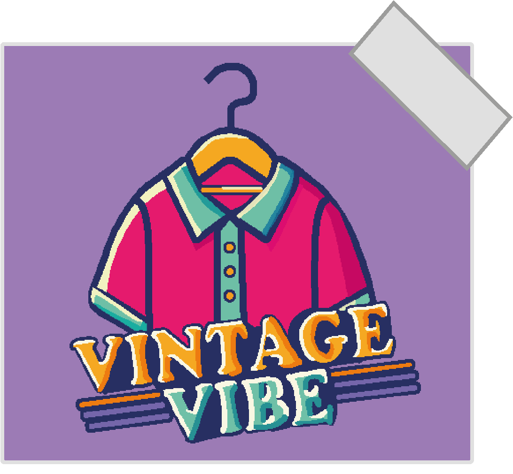
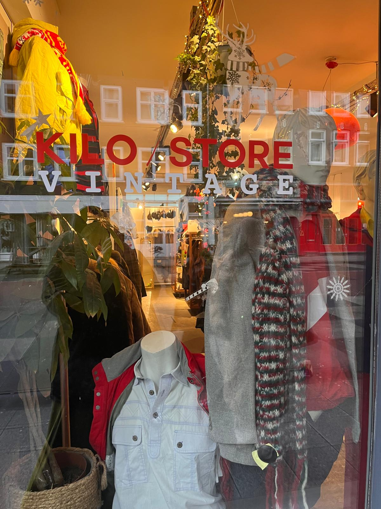

"Mode met een verhaal"
Over ons

Welkom op mijn website over De Kilo Store! Hier deel ik mijn passie voor vintage kleding, tips voor unieke items en duurzame mode. Laat je inspireren door tweedehands stijl!
De Kilo Store
De Kilo Store biedt betaalbare vintage kleding waarbij je per kilo betaalt. Het unieke concept maakt het mogelijk verschillende stijlen en materialen te combineren tegen een vaste prijs. De winkel bevordert duurzaamheid door hergebruik van kleding en biedt steeds wisselende collecties die bij diverse smaken passen.